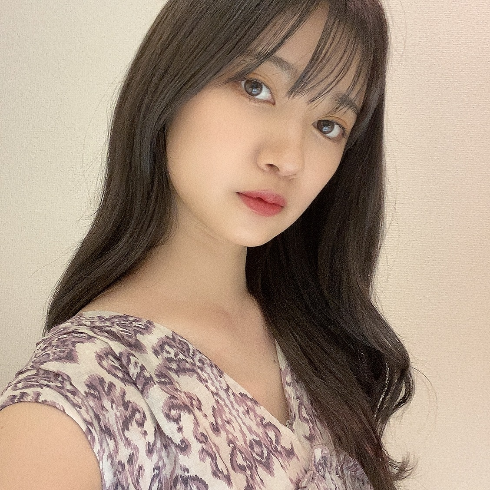
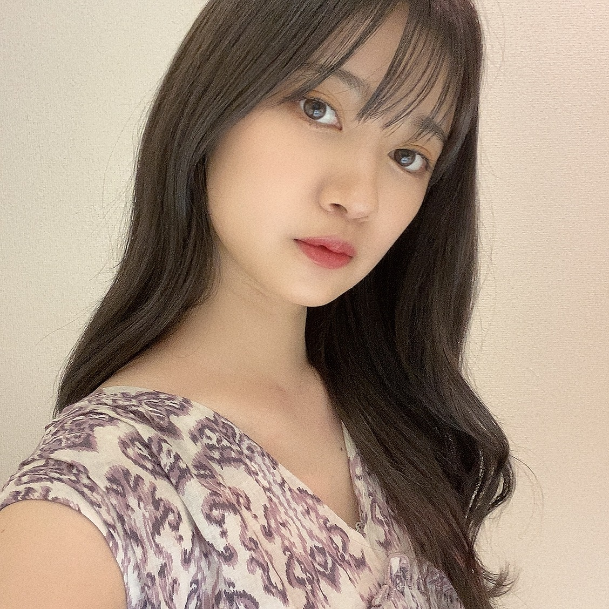

2020/0906SunマジLOVE1000%
題名はアニメソング総選挙より
ミュージカルでも歌わせてもらった
ムーンライト伝説とマジLOVE1000%が並んでランクインが嬉しい。☺️
セーラームーンは本当に3歳くらいから
好きな作品で字が読めないながらに
漫画を買ってもらったり
バンダイ版のミュージカルから観ていたり
カラオケでも小さい頃歌ってたムーンライト伝説
とても、大好きな作品です。
うたプリは初めて本格的にアニメにハマった作品
好きな楽曲ありすぎますが
月明かりのDEAREST好きです。☺️
オールナイトニッポンありがとうございました。
ここ最近凄く頻度良くお邪魔させてもらっている気がします。！
まだまだ、色んな初めて話があるので
こうやって話す機会があるのは嬉しいです。☺️
夜遅くにラジオをかけておくと安心するから
そのラジオに自分が出れること嬉しく思います。☺️
そして、ラジオで思い出の曲で選曲させてもらった
ハート型ウイルスがネットで話題になったらしく
友人から蘭世なにしたーって
連絡頂きました、、、
それで話題に取り上げてもらったことを
知ったのですが
ほっこりする話題が届けられてよかったです。☺️
ハート型ウイルスという事で
こじはるさんのブランドのお洋服のお写真を
お納めください。！！
こじ坂という企画でお世話になっていたり
こうやってアイドルをご卒業されても
今回この様な形で繋がりを感じられた事
嬉しく思います。！
また、お会いしたいです。☺️


ぶれぶれですが、、、


また、少しぶれぶれですが、、、画像どうぞ
あやちゃんお誕生日おめでとう。✨
ミュージカルでも歌わせてもらった
ムーンライト伝説とマジLOVE1000%が並んでランクインが嬉しい。☺️
セーラームーンは本当に3歳くらいから
好きな作品で字が読めないながらに
漫画を買ってもらったり
バンダイ版のミュージカルから観ていたり
カラオケでも小さい頃歌ってたムーンライト伝説
とても、大好きな作品です。
うたプリは初めて本格的にアニメにハマった作品
好きな楽曲ありすぎますが
月明かりのDEAREST好きです。☺️
オールナイトニッポンありがとうございました。
ここ最近凄く頻度良くお邪魔させてもらっている気がします。！
まだまだ、色んな初めて話があるので
こうやって話す機会があるのは嬉しいです。☺️
夜遅くにラジオをかけておくと安心するから
そのラジオに自分が出れること嬉しく思います。☺️
そして、ラジオで思い出の曲で選曲させてもらった
ハート型ウイルスがネットで話題になったらしく
友人から蘭世なにしたーって
連絡頂きました、、、
それで話題に取り上げてもらったことを
知ったのですが
ほっこりする話題が届けられてよかったです。☺️
ハート型ウイルスという事で
こじはるさんのブランドのお洋服のお写真を
お納めください。！！
こじ坂という企画でお世話になっていたり
こうやってアイドルをご卒業されても
今回この様な形で繋がりを感じられた事
嬉しく思います。！
また、お会いしたいです。☺️
ぶれぶれですが、、、

また、少しぶれぶれですが、、、画像どうぞ
あやちゃんお誕生日おめでとう。✨
2020/09/06 20:36
コメント(345)
私もうたプリが好きです！
月明かりの2人の歌声素晴らしいですよね…分かります…
推しは誰ですか？(*^^*)
月明かりの2人の歌声素晴らしいですよね…分かります…
推しは誰ですか？(*^^*)
ブログ更新ありがとう！
セーラームーンの舞台やって時の寺田さんはすごく綺麗でした。直接舞台を見た訳じゃないんですがSNSで画像を見た時、綺麗すぎてさらに好きになりました。
これからもずっと応援してます！大好きです！
セーラームーンの舞台やって時の寺田さんはすごく綺麗でした。直接舞台を見た訳じゃないんですがSNSで画像を見た時、綺麗すぎてさらに好きになりました。
これからもずっと応援してます！大好きです！
いっぱいの写真ありがとう
アニソン総選挙予想外がいっぱいあった！
蘭世さん セーラームーン好きなのかわいい！ww
蘭世さん セーラームーン好きなのかわいい！ww
蘭世～。 毎回同じことを言いますが会いに行きたいです❗️収束する迄頑張ります。 ラブ ♥️❤️ラブ ♥️❤️
蘭世ちゃん、モバメ・ブログ有り難うございます。!!!
セラミュの観すぎで『ムーンライト伝説』がセラミュのメンバーの歌声で脳内再生されてます。!とくに美里さんと四天王のパート。!!!!
自分は『Butter-Fly』とかランクインしてて嬉しかったですね。好きなアニメがたくさんで幸せでした。!!!!
セラミュの観すぎで『ムーンライト伝説』がセラミュのメンバーの歌声で脳内再生されてます。!とくに美里さんと四天王のパート。!!!!
自分は『Butter-Fly』とかランクインしてて嬉しかったですね。好きなアニメがたくさんで幸せでした。!!!!
写真を見たらおねえちゃんになったね
蘭世お疲れ様です。
綺麗な蘭世が見れて嬉しい
昨日は生駒ちゃんのお芝居観てきました。又蘭世のお芝居も観てみたいです。ライブも観たいし、早くコロナ終わらないかな！
こじはるさんの洋服似合ってますよ。
綺麗な蘭世が見れて嬉しい
昨日は生駒ちゃんのお芝居観てきました。又蘭世のお芝居も観てみたいです。ライブも観たいし、早くコロナ終わらないかな！
こじはるさんの洋服似合ってますよ。
蘭世お疲れ様。
もう、私の中でセーラームーンは乃木坂、マーズと言えば蘭世って印象が強くなってるぐらいにいいミュージカルだった。
オールナイトニッポンも楽しかったよ。また出る時を楽しみにしてるね。
ハート型ウイルスの反響はほんとに凄かったねえ
もう、私の中でセーラームーンは乃木坂、マーズと言えば蘭世って印象が強くなってるぐらいにいいミュージカルだった。
オールナイトニッポンも楽しかったよ。また出る時を楽しみにしてるね。
ハート型ウイルスの反響はほんとに凄かったねえ
ブログ更新ありがとう☺︎
セーラームーン、私も大好きでした。
私は特に実写版のが好きでずっと観ていた記憶があります。
友達の家でコスプレもしたなあ。写真も残ってる☺️
オールナイトニッポンもお疲れ様でした〜
夜に蘭世ちゃんの声を聴くと落ち着くし、とっても良い時間になったよ！ありがとう☺️
蘭世ちゃんのお話もっと聴きたいな。
ハート型ウイルスがすごく話題になっててびっくりした！
自撮りも沢山ありがとう！
ごじはるさんのお洋服も似合ってる♡
大人っぽい蘭世ちゃんも好きです☺️
セーラームーン、私も大好きでした。
私は特に実写版のが好きでずっと観ていた記憶があります。
友達の家でコスプレもしたなあ。写真も残ってる☺️
オールナイトニッポンもお疲れ様でした〜
夜に蘭世ちゃんの声を聴くと落ち着くし、とっても良い時間になったよ！ありがとう☺️
蘭世ちゃんのお話もっと聴きたいな。
ハート型ウイルスがすごく話題になっててびっくりした！
自撮りも沢山ありがとう！
ごじはるさんのお洋服も似合ってる♡
大人っぽい蘭世ちゃんも好きです☺️
ブログ更新ありがとうー！本当そのワンピースがお似合いでいっぱい写真ありがとうございます
♂️家宝にしますね！ネットニュースみたよー！結構取り上げられててなんか自分も嬉しかったwまた更新待ってるよ！！
蘭世ー！！！うたプリ語りたい……私も好きです…
写真の蘭世の上唇がまいまいみたいに可愛くて好き笑
写真の蘭世の上唇がまいまいみたいに可愛くて好き笑
ブログ更新ありがとう！
タイトルってセーラームーンの曲なんだね！
舞台をやってる時から蘭世さんが言ってるけど、セーラームーンホントに好きなんだね！
俺も、男だけどセーラームーンは割と好きだよ笑
幼稚園の頃に何故かハマってた笑笑
オールナイトニッポンリアタイでは聞いてないけど、ハート型ウイルスが話題になってたのは知ってるよ！
こじはるさんがセンターなのかな？
よく知らないけど笑
その画像前にも載せてたけど、こじはるさんがデザインしたやつなんだね！
相変わらず可愛いですね☺️
またコメントします！
タイトルってセーラームーンの曲なんだね！
舞台をやってる時から蘭世さんが言ってるけど、セーラームーンホントに好きなんだね！
俺も、男だけどセーラームーンは割と好きだよ笑
幼稚園の頃に何故かハマってた笑笑
オールナイトニッポンリアタイでは聞いてないけど、ハート型ウイルスが話題になってたのは知ってるよ！
こじはるさんがセンターなのかな？
よく知らないけど笑
その画像前にも載せてたけど、こじはるさんがデザインしたやつなんだね！
相変わらず可愛いですね☺️
またコメントします！
らんぜー＼(^o^)／お疲れさまでした
おー、蘭世もアニソン総選挙見てるか？
そして3歳からセーラームーン好きだった蘭世可愛いなあ(*´ω｀*)
当時の歌ってる姿見たかったなあ(｡>﹏<｡)
ANNお疲れさまでした
やっぱり蘭世の声とワードセンスは最高だよ＼(^o^)／
SHOWROOMが無くて残念だった、本当に蘭世の私服姿もっと見たかった(´；ω；｀)
わーい＼(^o^)／沢山の写真ありがとう(*´ω｀*)
本当に沢山の蘭世の夏服姿見たいよ(｡>﹏<｡)
もう夏が終わったけど(ﾟдﾟ)！
これからも頑張って(/･ω･)/
おー、蘭世もアニソン総選挙見てるか？
そして3歳からセーラームーン好きだった蘭世可愛いなあ(*´ω｀*)
当時の歌ってる姿見たかったなあ(｡>﹏<｡)
ANNお疲れさまでした
やっぱり蘭世の声とワードセンスは最高だよ＼(^o^)／
SHOWROOMが無くて残念だった、本当に蘭世の私服姿もっと見たかった(´；ω；｀)
わーい＼(^o^)／沢山の写真ありがとう(*´ω｀*)
本当に沢山の蘭世の夏服姿見たいよ(｡>﹏<｡)
もう夏が終わったけど(ﾟдﾟ)！
これからも頑張って(/･ω･)/
蘭世☆
ブログ更新ありがとー♪
蘭世は何着てもお似合いだね
蘭世の服のセンス好きだなぁ～
らんぜまる～
マジLOVE1000%
ブログ更新ありがとー♪
蘭世は何着てもお似合いだね
蘭世の服のセンス好きだなぁ～
らんぜまる～
マジLOVE1000%
画像ありがとう！
ハート型ウイルスは僕も大好きな曲です！
話題になったの嬉しかったです！こじはるさんにも届いてますよ！
ハート型ウイルスは僕も大好きな曲です！
話題になったの嬉しかったです！こじはるさんにも届いてますよ！
こんばんは 僕もアニメソング総選挙観ました！歌ってしまいます。今後も身体に気をつけて頑張ってください♪アクセサリーと服と髪型とても似合っていて素敵です☆乃木坂46のみなさんの活躍を応援します
僕もアニメソング総選挙観ました！歌ってしまいます。今後も身体に気をつけて頑張ってください♪アクセサリーと服と髪型とても似合っていて素敵です☆乃木坂46のみなさんの活躍を応援します
蘭世さんブログ更新ありがとうございます
ANN凄く幸せな時間でした！
ANN凄く幸せな時間でした！
蘭ちゃん、おはよう。
ANN聴いてたよ。SHOWROOM配信が観れなくて残念だったけどね。
蘭ちゃんかわいい。
ANN聴いてたよ。SHOWROOM配信が観れなくて残念だったけどね。
蘭ちゃんかわいい。
蘭世さんアニソン総選挙やっぱり見てるの？？笑
乃木坂のセラミュでセーラームーンに興味持ち始めて今ではセーラームーンって聞くと反応してしまう！！
セーラームーンでは火野レイちゃん推しですよ笑
マジLOVE1000%は高校の文化祭の時に当時好きやった先輩もアニメ好きでその曲踊ってたからその時はアニメ見たことないけどめっちゃ聞いてた！
もちろん乃木坂大好きだけと中学生以来にAKBグループへのモチベが高くなってYoutubeでMV見てるのよ笑
乃木坂が48Gの話とか出ると凄く嬉しい！！
蘭世さんまだ暑い日が続くので体に気をつけたください
乃木坂のセラミュでセーラームーンに興味持ち始めて今ではセーラームーンって聞くと反応してしまう！！
セーラームーンでは火野レイちゃん推しですよ笑
マジLOVE1000%は高校の文化祭の時に当時好きやった先輩もアニメ好きでその曲踊ってたからその時はアニメ見たことないけどめっちゃ聞いてた！
もちろん乃木坂大好きだけと中学生以来にAKBグループへのモチベが高くなってYoutubeでMV見てるのよ笑
乃木坂が48Gの話とか出ると凄く嬉しい！！
蘭世さんまだ暑い日が続くので体に気をつけたください
ブログ更新ありがとう！
蘭世のラジオだったり話をするのがいつも楽しみになってます
ブログもいいけど、やっぱり実際の声を聞けるのもいいですね
これからそんな場が今よりたくさんできることを願ってます
またね！
蘭世のラジオだったり話をするのがいつも楽しみになってます
ブログもいいけど、やっぱり実際の声を聞けるのもいいですね
これからそんな場が今よりたくさんできることを願ってます
またね！
蘭世の思いと熱量は、伝わっていると思うし、ラジオで言ってた事が話題になるのは、蘭世がインフルエンサーだと言う事だなー
やぁ(｡･ω･)ﾉﾞ最愛なる蘭世
ブログ更新ありがとう！
あぁ今日なんかテレビでやってるな。
俺は見てないけど
今は映画観てるから
セーラームーンかぁ俺は何歳だろうむか～しにちょろっとたまに家にいる時に観てた気がする
うた☆プリは全くもって知らない
オールナイトニッポンお疲れさま！
とても楽しい時間を過ごさせてもらった
もっと蘭世
そっか夜にラジオ…誰かしらの声を聴いときたいんやな。そういうとこ少しわかる気がする。
俺は昔からテレビを付けてないと寝れなかったわ。
友人もびっくりしたんやな笑
最近、蘭世
おおまたこのワンピ！良き良き
何処かしらさ繋がってるのは嬉しいよな。
逢える事願ってる
綺麗な写真をありがとう！
全部素敵で最高やで
あやてぃーおめでとう！
メ―ルにブログありがとう！
コメント書いてんで
こじはるさんのTwitterには失礼のないようにご報告してきた
すごい先輩だもんな。
俺はあんまりって言うかほとんど知らないんだけど
みる背中は大きいのが良いからな。
きっとまた後で(｡･ω･)ﾉﾞ
きっとまた後で(｡･ω･)ﾉﾞ
蘭世ー！ブログ更新ありがとう！
今日アニソン総選挙だったんだね！やることあって普通に忘れてた…ショックだ〜…
僕はワンピースが好きなんですが、ランキング入らなかったらしいです…
名曲ばっかなので蘭世も機会あれば聞いて欲しいな〜
自分が好きな曲が取り上げられてた時ってテンション上がるよね！これからも沢山聴きましょう！
蘭世のラジオを通した声、本当に癒されます。寝床につきながら聞くのがいいです！
ハート型ウイルストレンド入りしましたね笑 小嶋さんとまたお会いできるといいですね！
ブレブレでも可愛いよー！本当に美しいです、、、
今台風が来て、大変な地域もあります。関東はそうでも無いですが季節の変わり目なので体調管理も含めて気をつけてください。
ずっと応援してます！
ちょっとした名言集
幸福な人生を歩んでいる人は、言葉の使い方を知っています。
言葉は選んで使いなさい。
言葉の選択一つで、人生は明るくも暗くもなるのです。
byジョセフ・マーフィ
今日アニソン総選挙だったんだね！やることあって普通に忘れてた…ショックだ〜…
僕はワンピースが好きなんですが、ランキング入らなかったらしいです…
名曲ばっかなので蘭世も機会あれば聞いて欲しいな〜
自分が好きな曲が取り上げられてた時ってテンション上がるよね！これからも沢山聴きましょう！
蘭世のラジオを通した声、本当に癒されます。寝床につきながら聞くのがいいです！
ハート型ウイルストレンド入りしましたね笑 小嶋さんとまたお会いできるといいですね！
ブレブレでも可愛いよー！本当に美しいです、、、
今台風が来て、大変な地域もあります。関東はそうでも無いですが季節の変わり目なので体調管理も含めて気をつけてください。
ずっと応援してます！
ちょっとした名言集
幸福な人生を歩んでいる人は、言葉の使い方を知っています。
言葉は選んで使いなさい。
言葉の選択一つで、人生は明るくも暗くもなるのです。
byジョセフ・マーフィ
ブログありがとう！
蘭世の影響力凄いね！
小さなことが大きな事につながると思うから
これからも何かいい事あるといいなあ
蘭世の影響力凄いね！
小さなことが大きな事につながると思うから
これからも何かいい事あるといいなあ
蘭世ちゃんこんにちは！
ブログ更新ありがとうございます！
ハート型ウイルスTwitterトレンドになっててビックリしました〜
まだANN聞けてないので、radikoでききますね！
こじはるさんのお洋服めっちゃ似合ってます！
今度私もサイトを覗きに行こうかな？
ブログ更新ありがとうございます！
ハート型ウイルスTwitterトレンドになっててビックリしました〜
まだANN聞けてないので、radikoでききますね！
こじはるさんのお洋服めっちゃ似合ってます！
今度私もサイトを覗きに行こうかな？
ブログにセクシーな蘭世ちゃんの連続写真、嬉しいですよ！ムーンライト伝説、蘭世ちゃんのセラミュ以来、僕にとっても、お気に入り曲です！
ブログ更新ありがとう(*^^*)
セーラームーンは観てなかったね(--;)
でも、蘭世のオススメなら僕も観てみようかな？そしたら、握手会の時とかに話題も増えると思うし、楽しそうに話してる蘭世も見れるからね！
オールナイトニッポンお疲れ様！やっぱり人それぞれ落ち着く曲はあるよね！俺もあるけど、やっぱり自分が落ち着く曲を蘭世にも勧めれたら良いなと思ってます！
あと、前回に少し早めのバースデーゴールを決めると言いましたけど有言実行できませんでした！すいません！
試合には負けてしまいましたが、自分は蘭世と同じ負けず嫌いで最後まで諦めないという気持ちで何度もピンチを救いました！でも、そのおかげで体中が痛いです( ˊᵕˋ ;)
しかし、27日にも試合があります！その日は蘭世の誕生日から4日後になってしまいますけど、バースデーゴールを決めたいです！もし、それができなくても勝利という結果を届けれたらと思ってます！
僕は蘭世が居るから、蘭世が頑張ってるのを見て俺も負けられないから何事にも諦めずに最後までボールに食らいつくことができます。これを前の握手会で伝えた時に蘭世は「いやいや、そんなことないよ！」と言ってたけど、この想いは本当です！
僕はディフェンダーで相手を止めたりゴールを守るポジションですけど、自分たちのゴールをいつも蘭世だと思ってます！ゴールを守りきれなきゃ大切な人も守れない。そういう気持ちでやってます！だから、僕は自分たちのゴールも大切な人である蘭世を守れるように頑張ります！
今日はサッカーの話ですいません( ˊᵕˋ ;)
早く蘭世に求められるように色んなことを頑張りたいと思います！ファッションやオシャレを！まだまだ勉強中ですけどね( ˊᵕˋ ;)
いつもブログやモバメありがとうね！今はコロナという状況でなかなか会って話す機会が無いけど、とても嬉しいよ！
また、名古屋の握手会で話そうね！
これからも蘭世が健康で過ごせますように！
蘭世のこと、大好きです！
そして、愛してます！
セーラームーンは観てなかったね(--;)
でも、蘭世のオススメなら僕も観てみようかな？そしたら、握手会の時とかに話題も増えると思うし、楽しそうに話してる蘭世も見れるからね！
オールナイトニッポンお疲れ様！やっぱり人それぞれ落ち着く曲はあるよね！俺もあるけど、やっぱり自分が落ち着く曲を蘭世にも勧めれたら良いなと思ってます！
あと、前回に少し早めのバースデーゴールを決めると言いましたけど有言実行できませんでした！すいません！
試合には負けてしまいましたが、自分は蘭世と同じ負けず嫌いで最後まで諦めないという気持ちで何度もピンチを救いました！でも、そのおかげで体中が痛いです( ˊᵕˋ ;)
しかし、27日にも試合があります！その日は蘭世の誕生日から4日後になってしまいますけど、バースデーゴールを決めたいです！もし、それができなくても勝利という結果を届けれたらと思ってます！
僕は蘭世が居るから、蘭世が頑張ってるのを見て俺も負けられないから何事にも諦めずに最後までボールに食らいつくことができます。これを前の握手会で伝えた時に蘭世は「いやいや、そんなことないよ！」と言ってたけど、この想いは本当です！
僕はディフェンダーで相手を止めたりゴールを守るポジションですけど、自分たちのゴールをいつも蘭世だと思ってます！ゴールを守りきれなきゃ大切な人も守れない。そういう気持ちでやってます！だから、僕は自分たちのゴールも大切な人である蘭世を守れるように頑張ります！
今日はサッカーの話ですいません( ˊᵕˋ ;)
早く蘭世に求められるように色んなことを頑張りたいと思います！ファッションやオシャレを！まだまだ勉強中ですけどね( ˊᵕˋ ;)
いつもブログやモバメありがとうね！今はコロナという状況でなかなか会って話す機会が無いけど、とても嬉しいよ！
また、名古屋の握手会で話そうね！
これからも蘭世が健康で過ごせますように！
蘭世のこと、大好きです！
そして、愛してます！
蘭世ブログありがとう！
ANN聴きました！
蘭世の声がすごく好きなのでとても幸せでした！
ANN聴きました！
蘭世の声がすごく好きなのでとても幸せでした！
セーラームーンも息が長い作品ですね。
そんな作品に乃木坂が関わることができ
て、何だか誇らしいです。
セーラーマーズは、熱い魂の持ち主の
らんぜちゃんには、適役でした。
乃木坂以外のアイドルには詳しくないけ
ど、縁のあるこじはるさんの曲ですもの
ね。
こじはるさんは、まいやん、まっちゅん
と競馬の番組で共演されていましたね。
こじはるさんブランドの服、首まわりの
カットが確かにその印象。
一段と大人っぽくて似合ってる。
そんな作品に乃木坂が関わることができ
て、何だか誇らしいです。
セーラーマーズは、熱い魂の持ち主の
らんぜちゃんには、適役でした。
乃木坂以外のアイドルには詳しくないけ
ど、縁のあるこじはるさんの曲ですもの
ね。
こじはるさんは、まいやん、まっちゅん
と競馬の番組で共演されていましたね。
こじはるさんブランドの服、首まわりの
カットが確かにその印象。
一段と大人っぽくて似合ってる。
更新ありがとう〜！
アニソン総選挙見てたんだね！
私はうたプリもμ'sもセーラームーンも出た後に見たから大事なとこ見れなかった(´･_･`)
私も月明かりのDEARESTすきだよ〜〜！！
始まるところのイントロからのとぅるるるん！みたいなとこ(伝わるかな笑)めちゃめちゃすき。笑
蘭世はおとやんが好きなんだよね！？
おとやんの楽曲なら迷わず
木漏れ日ダイヤモンドとOver the Rainbowが好きだあ〜！！
握手会でいつかアニメの話もしたいな（>_<）
セーラームーンだとなんのキャラが好きなの〜？？
私も小さい頃から好きだったんだよ！
女の子の憧れだよね（>_<）（>_<）
今月テストあるんだぁ、、頑張ります(´･_･`)
次の更新も待ってるね〜！
アニソン総選挙見てたんだね！
私はうたプリもμ'sもセーラームーンも出た後に見たから大事なとこ見れなかった(´･_･`)
私も月明かりのDEARESTすきだよ〜〜！！
始まるところのイントロからのとぅるるるん！みたいなとこ(伝わるかな笑)めちゃめちゃすき。笑
蘭世はおとやんが好きなんだよね！？
おとやんの楽曲なら迷わず
木漏れ日ダイヤモンドとOver the Rainbowが好きだあ〜！！
握手会でいつかアニメの話もしたいな（>_<）
セーラームーンだとなんのキャラが好きなの〜？？
私も小さい頃から好きだったんだよ！
女の子の憧れだよね（>_<）（>_<）
今月テストあるんだぁ、、頑張ります(´･_･`)
次の更新も待ってるね〜！
蘭世ブログ更新ありがとう！
自撮り上手だね！
どんどん綺麗な蘭世を見たいです。
自撮り上手だね！
どんどん綺麗な蘭世を見たいです。
蘭世こんにちは！！更新ありがとう！！
アニソンってやっぱりいいよなぁ！そのアニメを知っていれば
より良さもわかるし、逆に曲からアニメを知ることもあるよね！
音楽の力は絶大だね！！
ANN聞いたよ！！
蘭世の声はほんとに落ち着くから夜聞いてるとめっちゃ癒されるんよなぁー笑笑
ハート型ウイルスめっちゃ久しぶりに聞いたなぁ
あのセリフのところいいよなぁ蘭世にやってほしいな笑笑
台風がすごいから蘭世も気をつけてね！！
蘭世が一番！！！
アニソンってやっぱりいいよなぁ！そのアニメを知っていれば
より良さもわかるし、逆に曲からアニメを知ることもあるよね！
音楽の力は絶大だね！！
ANN聞いたよ！！
蘭世の声はほんとに落ち着くから夜聞いてるとめっちゃ癒されるんよなぁー笑笑
ハート型ウイルスめっちゃ久しぶりに聞いたなぁ
あのセリフのところいいよなぁ蘭世にやってほしいな笑笑
台風がすごいから蘭世も気をつけてね！！
蘭世が一番！！！
オールナイトニッポン蘭世さんで嬉しかった〜
声とか相槌が素敵だからラジオとても似合います！
これからも機会があれば是非聴きたいです！
声とか相槌が素敵だからラジオとても似合います！
これからも機会があれば是非聴きたいです！
蘭世ちゃんこんばんは‼ありがとうございます‼楽しみにしてます頑張ります‼気をつけて下さい！ありがとうございます‼頑張ります‼
蘭世ちゃんブログ有難う〜！
私はうたプリの曲だとHE★VENS GATEが1番好きだよ〜笑
久しぶりに見返そうかな！
熱中症とコロナに気をつけて
活動頑張ってね！！
私はうたプリの曲だとHE★VENS GATEが1番好きだよ〜笑
久しぶりに見返そうかな！
熱中症とコロナに気をつけて
活動頑張ってね！！
蘭世ー！ブログ更新ありがとうー！
蘭世さんブログ更新ありがとうございます！
毎回楽しく読ませていただいております！
1＋1＝100になってますか？
蘭世さん頑張ってください！
ずっとずっと応援してます！
そしてずっとず〜っと大好きです！
毎回楽しく読ませていただいております！
1＋1＝100になってますか？
蘭世さん頑張ってください！
ずっとずっと応援してます！
そしてずっとず〜っと大好きです！
ブログ更新ありがとう
蘭世ちゃんいっぱい写真ありがとう〜
これからもずっと応援してます
暑い日が続いてるので体調に気をつけてね
蘭世ちゃんいっぱい写真ありがとう〜
これからもずっと応援してます
暑い日が続いてるので体調に気をつけてね
蘭世まるブログ更新ありがとう!
蘭世のセーラーマーズまた見たいねー
オールナイトニッポンこちらこそありがとう
癒やしの夜でした
ハート型ウィルスも良きでした〜
あそこまで話題になるとは俺も予想外で
驚きましたw
写真ありがとう
モバメもありがとう!
いつも蘭世ありがとう!
蘭世のセーラーマーズまた見たいねー
オールナイトニッポンこちらこそありがとう
癒やしの夜でした
ハート型ウィルスも良きでした〜
あそこまで話題になるとは俺も予想外で
驚きましたw
写真ありがとう
モバメもありがとう!
いつも蘭世ありがとう!
ブログ更新ありがとう！！
オールナイトニッポン、楽しかったよー
夜更かしして良かった(^^)！
昔AKBの曲沢山聴いてたから、すごく懐かしくてテンション上がった！！
Twitterもトレンド入りしたしねー(^^)
蘭世はどんな洋服も似合いますね！
良きな写真を沢山、ありがとう(^^)！
9月ですが、まだ熱中症など怖いので気を付けて下さいね！
では、また。
オールナイトニッポン、楽しかったよー
夜更かしして良かった(^^)！
昔AKBの曲沢山聴いてたから、すごく懐かしくてテンション上がった！！
Twitterもトレンド入りしたしねー(^^)
蘭世はどんな洋服も似合いますね！
良きな写真を沢山、ありがとう(^^)！
9月ですが、まだ熱中症など怖いので気を付けて下さいね！
では、また。
蘭世さん ブログ更新ありがとうございます。
乃木坂だいすきと同じくらいうたプリだいすきマンです。
月明かり むっちゃいい曲ですよね..!
七色のコンパスもぜひ..!
季節の変わり目ですので体調にはお気をつけください。
乃木坂だいすきと同じくらいうたプリだいすきマンです。
月明かり むっちゃいい曲ですよね..!
七色のコンパスもぜひ..!
季節の変わり目ですので体調にはお気をつけください。
ブログ更新ありがとう！
ちょっと遅れたけどオールナイトニッポンありがとうございました！
showroomで見れなかったのは仕方ないです…
また別の機会に期待します。
いつもありがとう
ユースケ
ちょっと遅れたけどオールナイトニッポンありがとうございました！
showroomで見れなかったのは仕方ないです…
また別の機会に期待します。
いつもありがとう
ユースケ
こじはるさんかぁ(^^)
これを機にまた
お仕事でご縁できますように☆
♪傾斜する
めちゃくちゃ好きなんです(o^^o)
さあ台風がくるぞー(*_*)
これを機にまた
お仕事でご縁できますように☆
♪傾斜する
めちゃくちゃ好きなんです(o^^o)
さあ台風がくるぞー(*_*)
おつかれん
ブログ更新ありがとう！！
月明かりのDEAREST好きなのものすごく分かる、、、！！
カミュさんの低音と藍ちゃんの高音がすごく綺麗だよね、、
私も大好きだから嬉しい！！
her lip toとっても似合ってる〜〜！！
最高にかわいいです！！
どの服も素敵でかわいいよね、、
蘭世が着てるの見られて嬉しいです！
また更新楽しみにしてます！
月明かりのDEAREST好きなのものすごく分かる、、、！！
カミュさんの低音と藍ちゃんの高音がすごく綺麗だよね、、
私も大好きだから嬉しい！！
her lip toとっても似合ってる〜〜！！
最高にかわいいです！！
どの服も素敵でかわいいよね、、
蘭世が着てるの見られて嬉しいです！
また更新楽しみにしてます！
マーズパワーメイクアップッ☆懐かしきミュージカル！マーズ役にばっちりハマってたもんね☆やっはり残酷な天使のテーゼは強いねーッ(^-^)
ちなみにあたくしはテレビ版のささきいさおさんが歌う銀河鉄道999のオープニングです！人は誰でも幸せ探す旅人のようなもの、いい歌です！
こじはるさんプロデュースのワンピも大人チックでおしゃれだし、表情も凄く良きーッ！！卒業されても違うグループでもあるけどこうした繋がりも嬉しきことだよね(^-^)機会があればファッション関係などの仕事もできたら最高だね！坂道は不滅です(≧∇≦)
ちなみにあたくしはテレビ版のささきいさおさんが歌う銀河鉄道999のオープニングです！人は誰でも幸せ探す旅人のようなもの、いい歌です！
こじはるさんプロデュースのワンピも大人チックでおしゃれだし、表情も凄く良きーッ！！卒業されても違うグループでもあるけどこうした繋がりも嬉しきことだよね(^-^)機会があればファッション関係などの仕事もできたら最高だね！坂道は不滅です(≧∇≦)
蘭世こんばんは！
ブログ更新ありがとう〜〜
アニソンランキング、私も見てたー！
ムーンライト伝説流れた瞬間、
セラミュ思い出して懐かしくなったよ〜
何年経っても愛される曲,作品ってすごいよね
ANNお疲れさまでしたー！
翌日ネットニュースになっててビックリした。
でも、こういう些細なことでも
ニュースになって、寺田蘭世って誰だろう？
乃木坂にこんな子いるんだ！って
より多くの人に知ってもらえるきっかけに
なってたらすごくいいことだよね！
こじ坂の傾斜するは本当に名曲だと思う！
ボーダー組の貴重な参加曲だしね♪
すっごくよく聴いてる〜
台風とか色々気をつけてね！
涼しくなってきたけど、まだまだ夏だから
熱中症とか風邪とかにもお気をつけください〜
またコメントしますね。
ではっ！
ブログ更新ありがとう〜〜
アニソンランキング、私も見てたー！
ムーンライト伝説流れた瞬間、
セラミュ思い出して懐かしくなったよ〜
何年経っても愛される曲,作品ってすごいよね
ANNお疲れさまでしたー！
翌日ネットニュースになっててビックリした。
でも、こういう些細なことでも
ニュースになって、寺田蘭世って誰だろう？
乃木坂にこんな子いるんだ！って
より多くの人に知ってもらえるきっかけに
なってたらすごくいいことだよね！
こじ坂の傾斜するは本当に名曲だと思う！
ボーダー組の貴重な参加曲だしね♪
すっごくよく聴いてる〜
台風とか色々気をつけてね！
涼しくなってきたけど、まだまだ夏だから
熱中症とか風邪とかにもお気をつけください〜
またコメントしますね。
ではっ！
え〜！蘭世うたプリ好きなん？？私もめっちゃハマった！ゲームのほうやけど♪笑
私はrouletteが好きやったなぁ〜
私はrouletteが好きやったなぁ〜


バイトが終わったばっかりだったので、癒されました！
オールナイトニッポンを聞きながらテスト勉強したよ
聞き込みすぎて進まなかったよ！！
蘭世だいすき〜！！